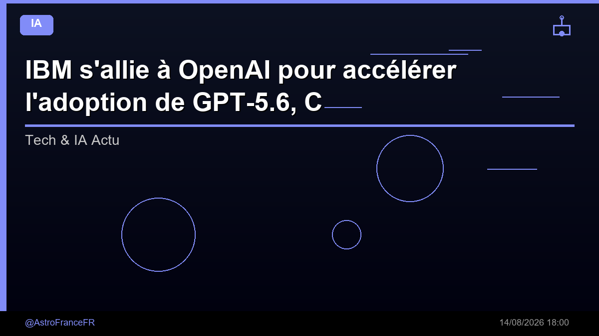

IBM s'allie à OpenAI pour accélérer l'adoption de GPT-5.6, Codex et ChatGPT Work en entreprise - KultureGeek

🛒 En lien avec cet article
Publicité — Liens de partenariat Amazon : une commission peut être reversée, sans surcoût pour vous.
🔥 Top produits tech du moment
🛒 Voir le prix : Apple EarPods (USB-C)
Publicité — Liens de partenariat Amazon : une commission peut être reversée, sans surcoût pour vous.
L'intelligence artificielle continue de transformer en profondeur notre quotidien et l'économie. Cette annonce s'inscrit dans une dynamique où les grands acteurs accélèrent leurs investissements et leurs lancements.
Ce qu'il faut retenir
IBM s'allie à OpenAI pour accélérer l'adoption de GPT-5.6, Codex et ChatGPT Work en entreprise KultureGeek
Pourquoi c'est important
Cette information marque une nouvelle étape dans le développement de l'intelligence artificielle. Elle concerne directement les utilisateurs de technologies numériques et mérite d'être suivie de près dans les prochaines semaines. IBM s'allie à OpenAI pour accélérer l'adoption de GPT-5.6, Codex et ChatGPT Work en entreprise - KultureGeek est ainsi un signal à prendre en compte pour comprendre les évolutions du secteur.
En résumé
Retenez l'essentiel : IBM s'allie à OpenAI pour accélérer l'adoption de GPT-5.6, Codex et ChatGPT Work en entreprise - KultureGeek. Cette actualité a été rapportée par Google News IA. Nous continuerons de suivre ce sujet et de vous tenir informés des prochaines évolutions.
Source : Google News IA